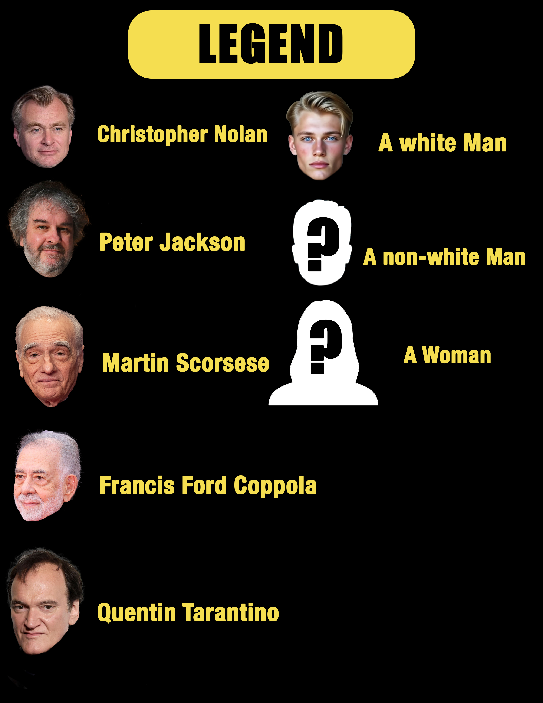
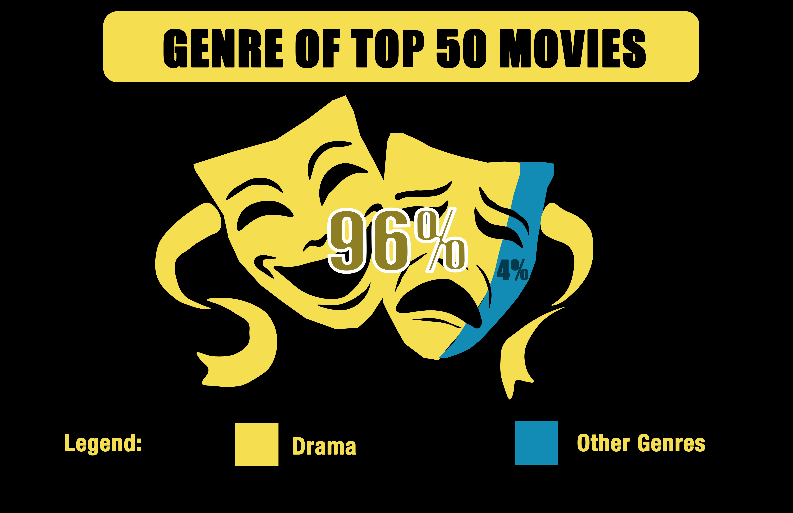

In this project, I analyzed 9,083 rated movies on IMDb from 1920 to 2024
to uncover the elements that consistently appear in films rated 8/10 or higher.
The patterns I found touch on director, genre, and release year.
By exploring which movies rise to the top and why, we can better understand
what viewers value most in storytelling — and what it might take to create
the so-called “perfect movie.”
THE TOP 10
These are the top 10 highest-rated movies in my dataset. Hover over each
poster to reveal its title and IMDb rating, and watch how each one fills
the 10-star bar to show how close it gets to a “perfect” 10/10 score.
The Shawshank Redemption
IMDb rating: 9.3 / 10
★★★★★★★★★
9.3 / 10
The Godfather Poster
IMDb rating: 9.2 / 10
★★★★★★★★★
9.2 / 10
The Dark Knight
IMDb rating: 9.0 / 10
★★★★★★★★★
9.0 / 10
Schindler’s List
IMDb rating: 9.0 / 10
★★★★★★★★★
9.0 / 10
The Lord of the Rings: The Return of the King
IMDb rating: 9.0 / 10
★★★★★★★★★
9.0 / 10
The Godfather Part II
IMDb rating: 9.0 / 10
★★★★★★★★★
9.0 / 10
Pulp Fiction
IMDb rating: 9.0 / 10
★★★★★★★★★
9.0 / 10
The Lord of the Rings: The Fellowship of the Ring
IMDb rating: 8.9 / 10
★★★★★★★★★
8.9 / 10
Fight Club
IMDb rating: 8.8 / 10
★★★★★★★★★
8.8 / 10
Inception
IMDb rating: 8.8 / 10
★★★★★★★★★
8.8 / 10
The Directors

The first ingredient to a top-rated movie is your director. The top 10 movies all had
white, male directors. And several directors made multiple appearances. The bottom 10
movies equally had a large amount of white, male directors. This suggests that white
male directors don’t necessarily direct better movies, but are given more openings and
opportunities to direct movies in the first place.
The Genre

Drama genre: a genre that relies on the emotional development of realistic characters and
prioritizes serious topics over humor.
96% of the top 50 movies were labeled as a drama genre with one or two other subgenres.
This reflects that viewers appreciate serious tones, emotional depth, realistic characters,
and interpersonal conflicts.
The Release Year
Before 2000s
After 2000s
Top 50 IMDb-rated Movies
62%38%
Bottom 50 IMDb-rated Movies
30%70%
62% of the top 50 IMDb-rated movies were made before 2000, compared with only 30% of the bottom 50.
This suggests that older films perform better, potentially due to stylistic appeal or differences
in how movies were judged prior to major technological advancement.